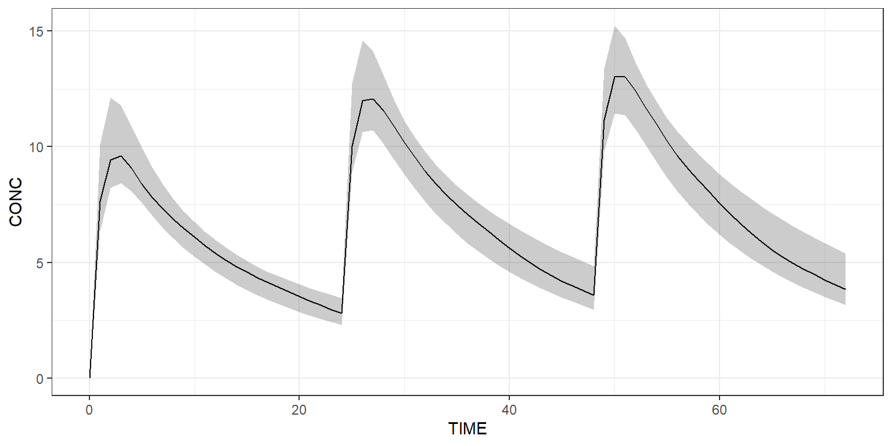

Get started
Load model
Load a PK model from the built-in model library or load your own one.
Create dataset
Create a dataset of 10 individuals in Campsis For instance, let’s give 1000 mg QD for 3 days and observe every hour.
Simulate
Simulate this very simple protocol:
Plot results
Plot all simulated profiles using a spaghetti plot:
Or use a shaded plot to see the simulated 90% prediction interval:

Simulate arms
The dataset can contain more than one treatment arm. In the example below, we explicitly create two arms. The first arm receives a dose of 1000 mg QD, while the second arm receives twice this dose amount.
arm1 <- Arm(subjects=50, label="1000 mg QD") %>%
add(Bolus(time=0, amount=1000, ii=24, addl=2)) %>%
add(Observations(times=0:72))
arm2 <- Arm(subjects=50, label="2000 mg QD") %>%
add(Bolus(time=0, amount=2000, ii=24, addl=2)) %>%
add(Observations(times=0:72))
dataset <- Dataset() %>%
add(c(arm1, arm2))
results <- model %>% simulate(dataset, seed=1)
shadedPlot(results, "CONC", colour="ARM") +
ggplot2::theme_bw()
Derive from base model
Scenarios derived from the base model and/or dataset can be easily implemented. Below, we’d like to see what happens if the clearance of this model is multiplied by two.
scenarios <- Scenarios() %>%
add(Scenario("Base model")) %>% # Original CL is 5
add(Scenario("Increased clearance", model=~.x %>% replace(Theta(name="CL", value=10))))
results <- model %>% simulate(dataset, scenarios=scenarios, seed=1)
shadedPlot(results, "CONC", colour=c("ARM"), strat_extra="SCENARIO") +
ggplot2::facet_wrap(~SCENARIO) +
ggplot2::theme_bw()
Post-process your results
For instance, let’s derive some non-compartmental analysis (NCA)
metrics at Day 3, for each scenario and arm, with the campsisnca
package:
library(campsisnca)
library(gtsummary)
library(gt)
table <- NCAMetricsTable()
for (scenario in c("Base model", "Increased clearance")) {
for (arm in c("1000 mg QD", "2000 mg QD")) {
data <- results %>% dplyr::filter(SCENARIO==scenario, ARM==arm) %>% timerange(48, 72, rebase=TRUE)
nca <- NCAMetrics(x=data, variable="CONC", scenario=c(scenario=scenario, arm=arm)) %>%
add(c(AUC(unit="ng/mL*h"), Cmax(unit="ng/mL"), Tmax(unit="h"), Ctrough(unit="ng/mL"))) %>%
calculate()
table <- table %>%
add(nca)
}
}
table %>%
export(dest="gt", subscripts=TRUE, combine_with="tbl_merge")| Metric |
Base model
|
Increased clearance
|
||
|---|---|---|---|---|
| 1000 mg QD N = 501 |
2000 mg QD N = 501 |
1000 mg QD N = 501 |
2000 mg QD N = 501 |
|
| AUC (ng/mL*h) | 190 (149–249) | 380 (306–498) | 97 (76–126) | 198 (154–267) |
| Cmax (ng/mL) | 13.2 (9.9–15.1) | 25.4 (21.6–31.6) | 9.6 (7.2–11.2) | 18.7 (16.0–23.2) |
| tmax (h) | 2.00 (2.00–3.00) | 3.00 (2.00–3.00) | 2.00 (2.00–3.00) | 2.00 (2.00–3.00) |
| Ctrough (ng/mL) | 4.16 (2.88–5.98) | 8.51 (5.82–13.39) | 1.05 (0.63–1.98) | 2.25 (1.24–4.44) |
| 1 Median (5% Centile–95% Centile) | ||||
We invite you to check out how e-Campsis can help you derive the NCA metrics in a more automated and user-friendly way.